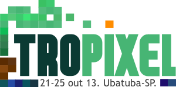

Já faz aproximadamente três anos que tenho buscado articular ações concretas entre o contexto local de Ubatuba e um sem-número de referências contemporâneas sobre reflexão e prática transformadoras. Nesse meio-tempo conheci bastante gente, testei ideias, provoquei algumas questões. Desde quando comecei a articular o ubalab como esporo de cultura digital, já me perguntava sobre a viabilidade e relevância de pensar algum evento em Ubatuba ligado ao que então eu chamava de "cultura livre". Vieram o encontrinho do MutGamb e o encontrão Hipertropical da MetaReciclagem. O primeiro era uma reunião de trabalho, restrita ao grupo de pessoas responsável pelo MutGamb. O segnundo já ensaiava um movimento mais aberto, mas era ainda um encontro de rede, de pessoas que já se conheciam e compartilhavam - mesmo que com enorme diversidade - uma série de referências e anseios. Por mais que fosse um evento aberto à participação, da perspectiva da cidade ele se colocava como uma construção autorreferente.

Nesse meio-tempo, continuei observando e acompanhando tanto os ritmos da cidade quanto os circuitos mundo afora. Participei de mais alguns eventos. Fiquei curioso e esperançoso com o que me parece uma mudança de orientação com a nova administração municipal. Testemunhei feliz o alto nível de participação nas conferências municipais e eventos similares.
Preparando o Pixelache, em maio, eu pude pensar bastante a respeito de formatos. Aquele modelo de atuação altamente estruturado e quase inescapável dos eventos em cidades ocidentais contemporâneas, que acabamos quase forçados a adotar em Helsinque - seminário, exposição em um lugar central, workshops, programação bem definida, separação clara entre público e participantes - me parecia bastante questionável para o contexto de Ubatuba. Já durante o Camp Pixelache, na ilha de Naissaar - que tinha um formato solto, mais para encontro de rede -, eu fiquei imaginando meus planos para o festival em Ubatuba como um jogo de cartas. Seminário seria uma carta, a ser usada com intenções específicas, que tinha pressupostos e limitações bem particulares. Mostra, oficinas, atividades ao ar livre, refeições - todas cartas que podem ser jogadas, mas devem ser muito bem avaliadas. Cada uma tem um efeito diferente na realidade, na dinâmica do encontro, na expectativa de participantes. Conversei com muita gente sobre a intenção de fazer alguma coisa por aqui, e fiz uma pequena apresentação-convite em uma sessão do Camp Pixelache. A primeira semente estava lançada.

Comecei então a planejar de maneira mais concreta a realização de um Festival em Ubatuba. Chamo de Festival, e não encontro, porque dessa vez imagino um evento voltado "para fora", que busque relacionar-se com pessoas que ainda não estão habituadas com todo aquele universo conceitual da cultura livre, do ativismo midiático, dos rizomas e TAZes, do código livre/aberto e da bricolagem tecnológica. É também uma maneira de testar a hipótese do Festival como Laboratório Vivo como o Future Everything propõe. O Festival se relaciona, naturalmente, com outros projetos que quero viabilizar na cidade no futuro: um espaço dedicado ao recondicionamento, apropriação crítica e experimentação criativa com equipamentos eletrônicos descartados (com base na MetaReciclagem e levando em conta a complexidade da questão do lixo eletrônico) e um espaço de trabalho e agenciamento para projetos de cultura e educação (ou os dois espaços em um só, a depender do que vier pela frente).
O festival já tem nome e site: Tropixel. Tem data marcada (21 a 25 de outubro de 2013) e lugar para acontecer (em três ou quatro lugares de Ubatuba). Está sendo planejado por pessoas que eu muito admiro. Ele se insere, como já sugeri acima, em um histórico que vem de longe, e cujos capítulos mais recentes são o Labx no festival CulturaDigital.br, o Encontrão Hipertropical de MetaReciclagem, a Cigac Semiárido, a programação Bricolabs no Pixelache 2013.
Como o nome sugere, o festival Tropixel aproxima-se da rede de eventos Pixelache. Ao longo das conversas, decidimos deixar de lado o enfoque em cultura digital e ampliá-lo para "arte, ciência, tecnologia e sociedade". Queremos nos aprofundar em três grupos de temas: ambientes, pessoas e coisas. Vamos organizar um seminário de um dia, seguido de três dias de laboratório temporário e nômade. E estamos abertos a receber propostas de participação, através de uma chamada. Ainda estamos buscando apoio financeiro mais concreto para decidir se teremos como bancar hospedagem e transporte para as propostas aceitas, mas arranjos solidários e compartilhados também são possíveis.
P.S.: Valeu Bica pelo toque de revisão ;)